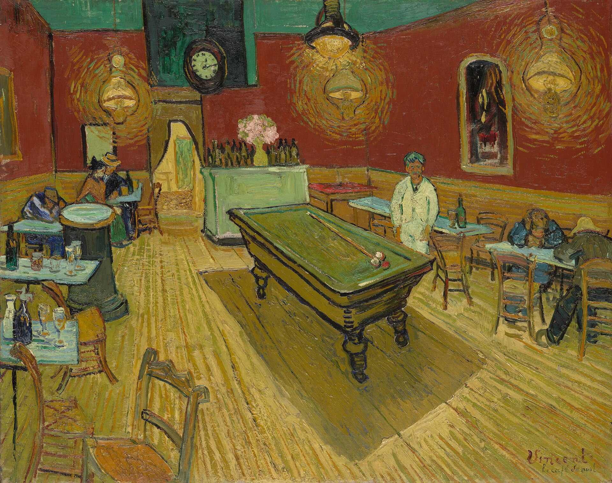
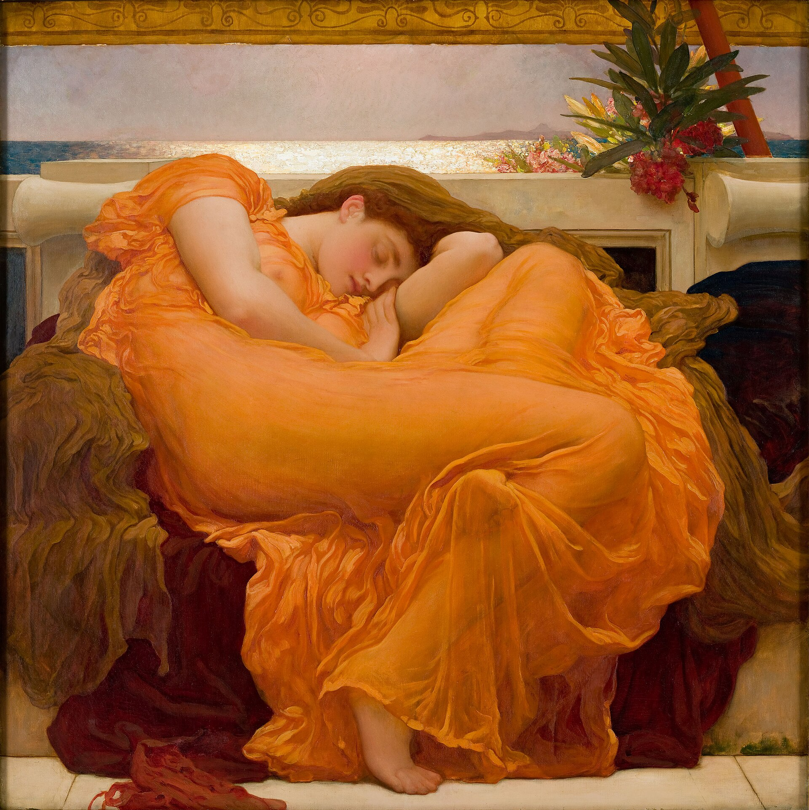
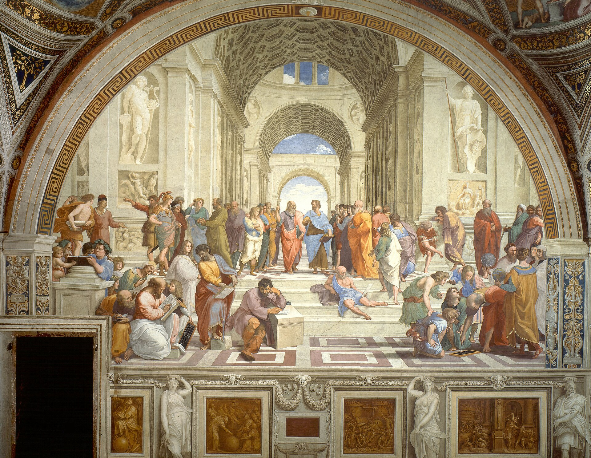
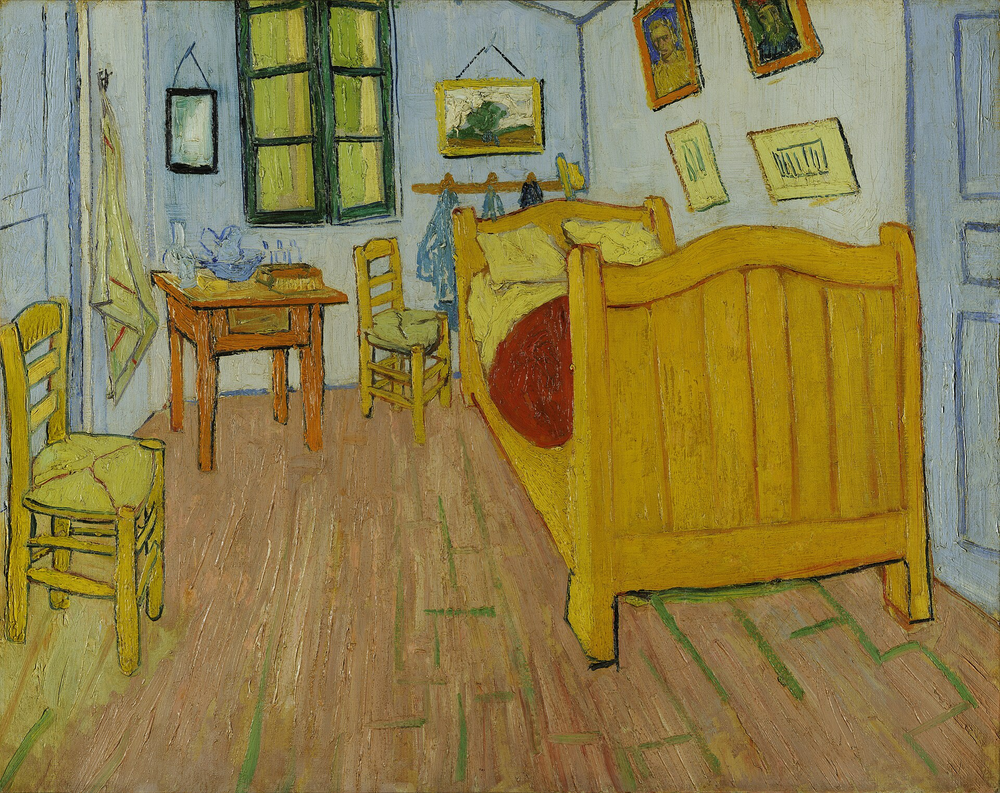
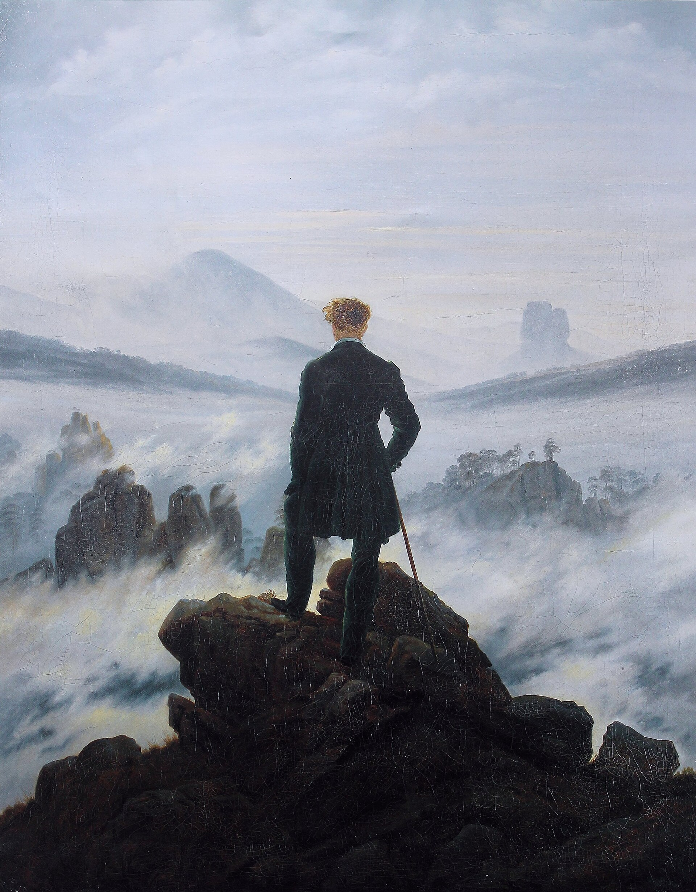

미국 피츠버그대 등 공동 연구팀Journal of Political Economy, 2026
하룻밤에 약 5달러, 4주 동안

평균 수면 6.6시간

7시간 이상 잔 날이 26% 늘었다하루 약 19분 더 잤다

GPA 약 +0.08점
더 한 게 아니라, 잠을 채운 머리로 했다

실험에서도 매일 밤 취침 알림을 보냈다

저장해두고, 오늘 밤 취침 알람부터팔로우 @top1.routine